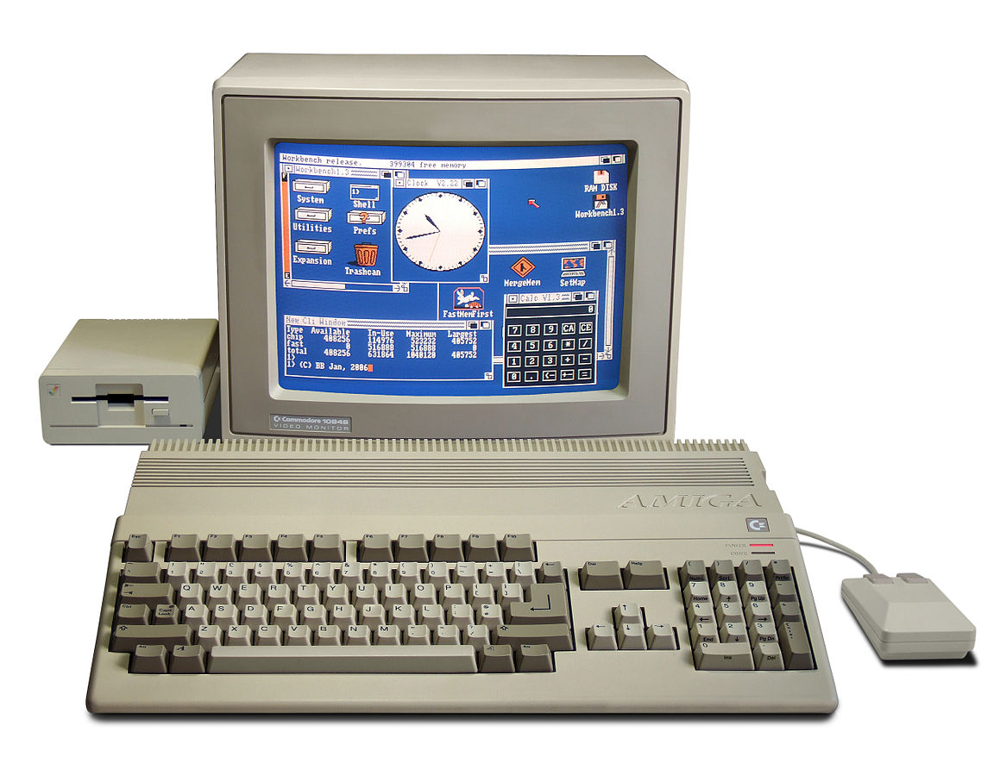

Girls' Day 2018
Eine Einführung in die Informatik
Stephan Strittmatter
Talent Scout, Sybit GmbH
28. April 2018
Eine Einführung in die Informatik: In einem Tag Programmieren lernen.

Stephan Strittmatter, Talent Scout & Senior Consultant
privates Foto
Autor
- mit 14 Jahren: Amiga 500
- Programmieren, Projektleitung, Marketing, …
- heute
- Senior Berater
- Talent Scout und Nachwuchsförderung
Amiga 500 von Bill Bertram - Eigenes Werk, CC BY-SA 2.5, Link

Wo steckt überall „die Informatik drin“?
ÜBERALL
Hardware & Software
In der Informatik verbinden sich Hardware und SoftwareHardware
- Computer
- Auto
- Smartphone
- Microprozessoren
- Sensoren
Software
- Windows
- Word, Excel, PowerPoint
- Browser
- Apps: Instagramm, SnapChat
- Steuerung des Geschirrspülers

Hardware & Software verbinden
Programmiersprachen
Eine Programmiersprache ist eine formale Sprache zur Formulierung von Datenstrukturen und Algorithmen,
d. h. von Rechenvorschriften, die von einem Computer ausgeführt werden können.
Sie setzen sich aus Anweisungen nach einem vorgegebenen Muster zusammen, der sogenannten Syntax.
— Wikipedia
In diesen Sprachen geschriebene Programme können automatisiert in Maschinensprache übersetzt werden, die von einem Prozessor ausgeführt wird.
Programmieranweisungen
Was brauchen wir?Computer soll langweilige Wiederholungen übernehmen:
Wiederholungsschleifen/Wiederholungen
antoniohez / pixabay.com, CC0 Creative Commons
Computer soll Entscheidungen ausführen:
Bedingungen
Was bedeutet Programmieren?
basic.showNumber(2)basic.showNumber(2)basic.showNumber(2)